Berkley Insurance
A company website
Berkley is one of the largest insurance companies in the world. Their leadership wanted help determing what a great website means for them. Who are they talking to? What are they trying to say.
As UX lead I worked with the Wunderman/Thompson and in conjunction with leadership at Berkley to answer these questions.
Berkley insurance consists of the parent company and over fifty subsidiary companies. Each subsidiary with its own brand relationship to the parent company.
I began with an analysis of the currunt web presence of Berkley Insurance and five of their subsidiary companies and competitors. I divided content types into categories to aid in later template creation.
Artifacts were created in conjuction with Berkley leadership to assist in and justify decision making.

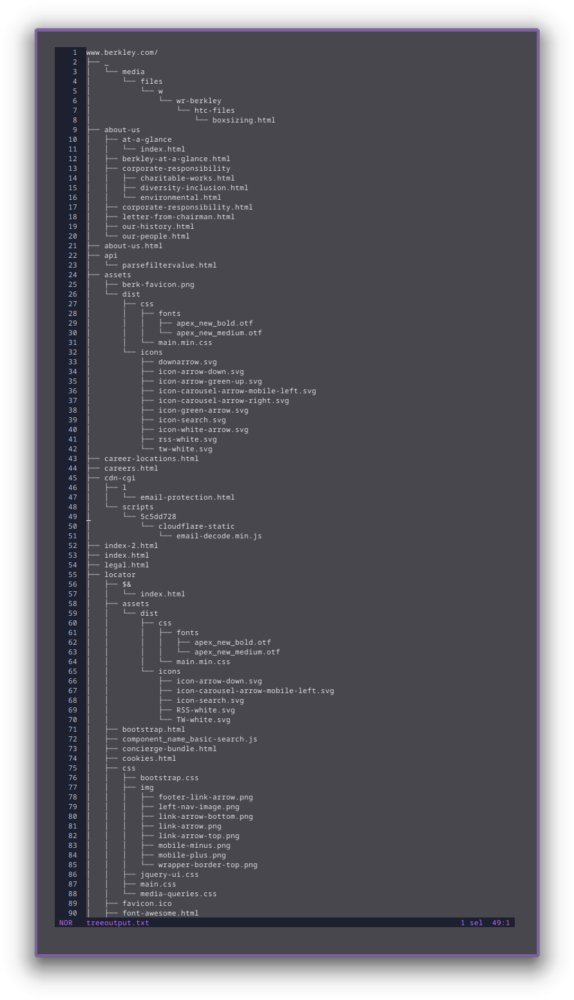

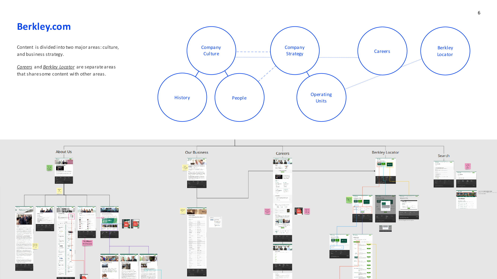
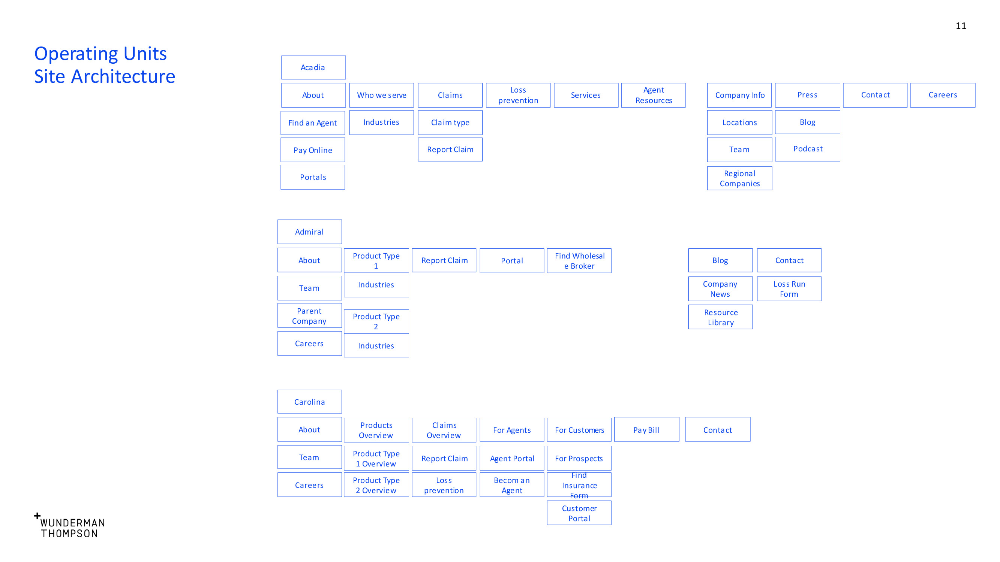
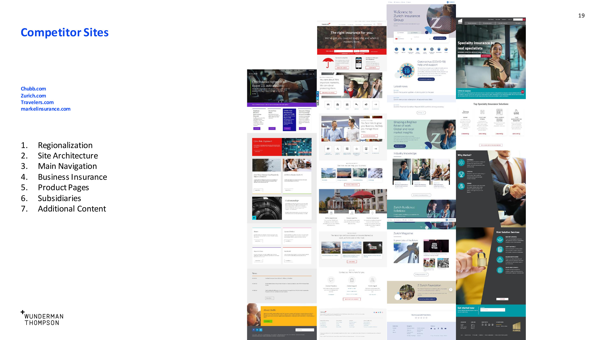
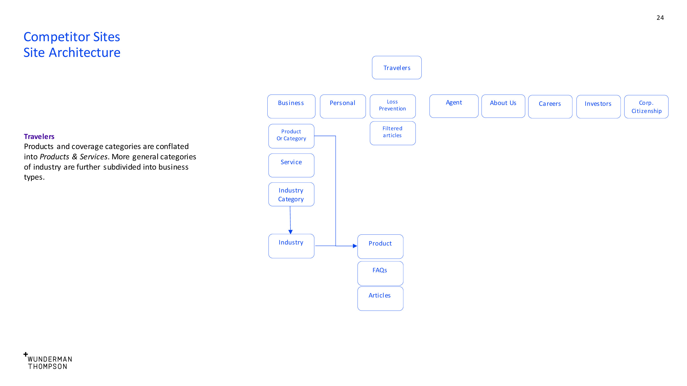

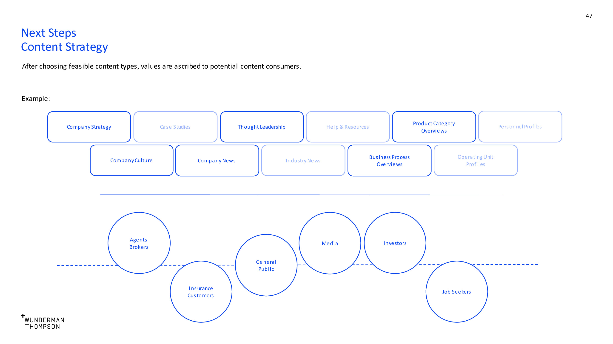

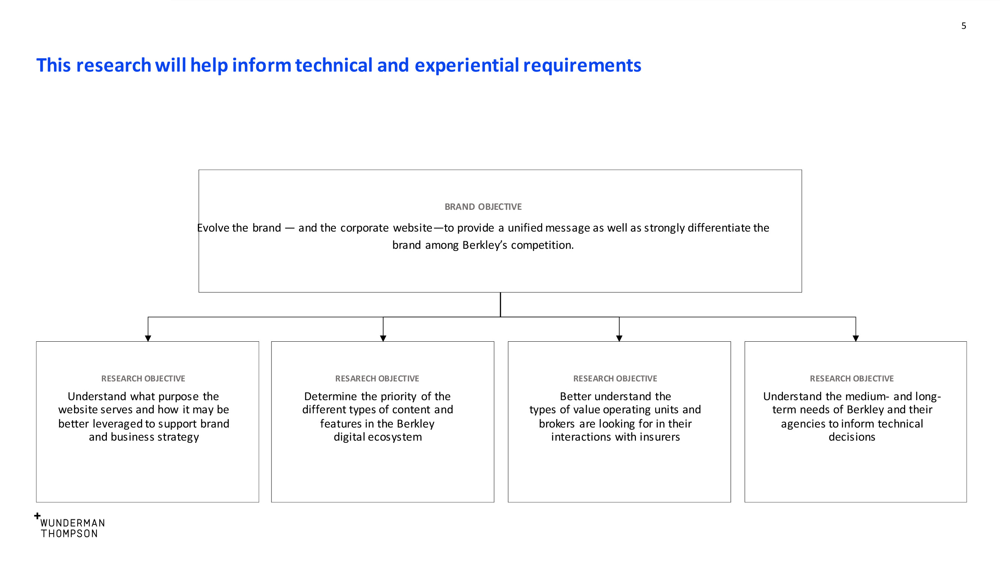


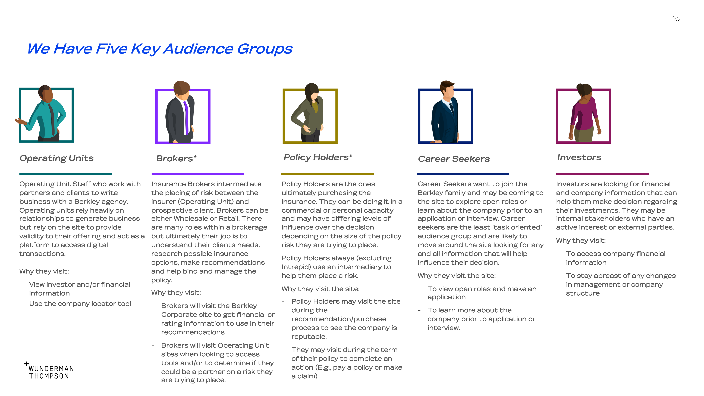

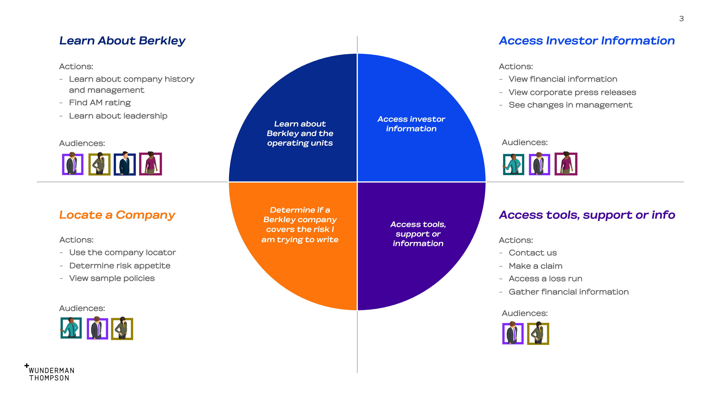
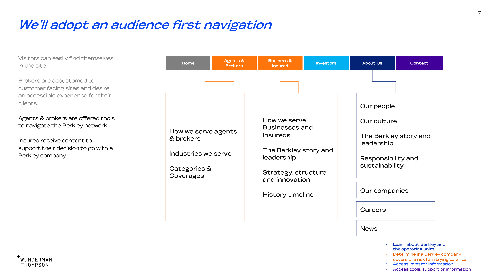
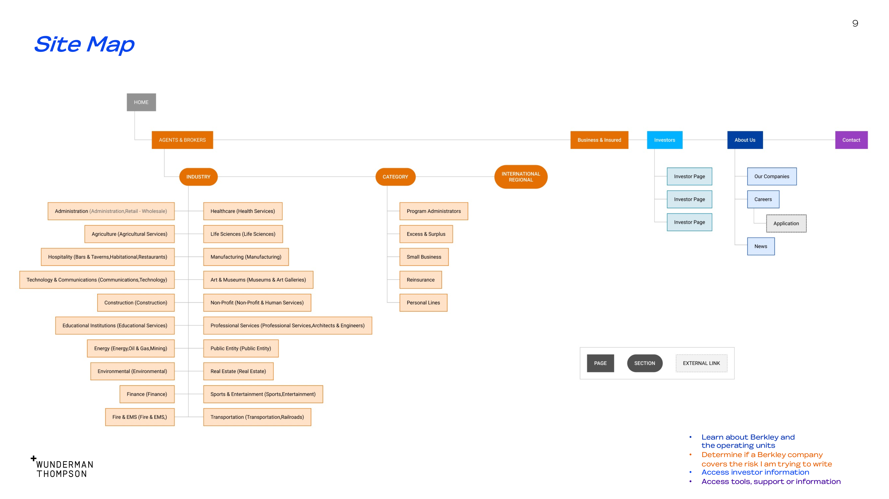